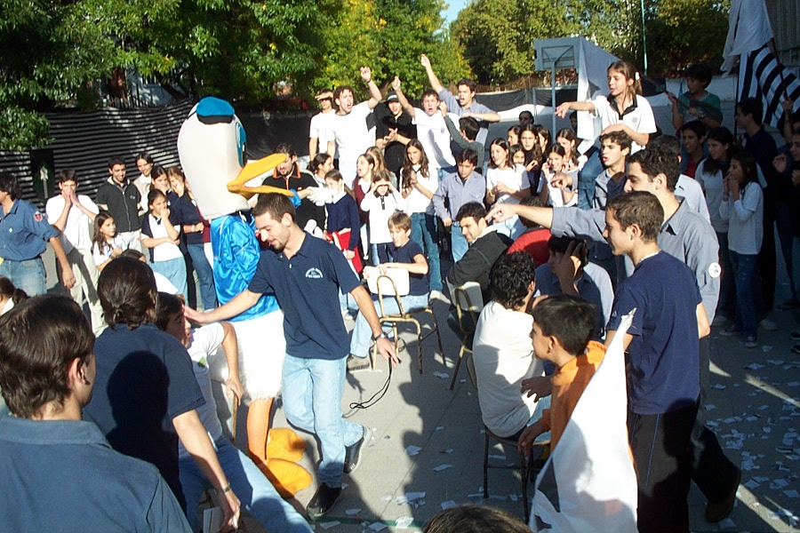
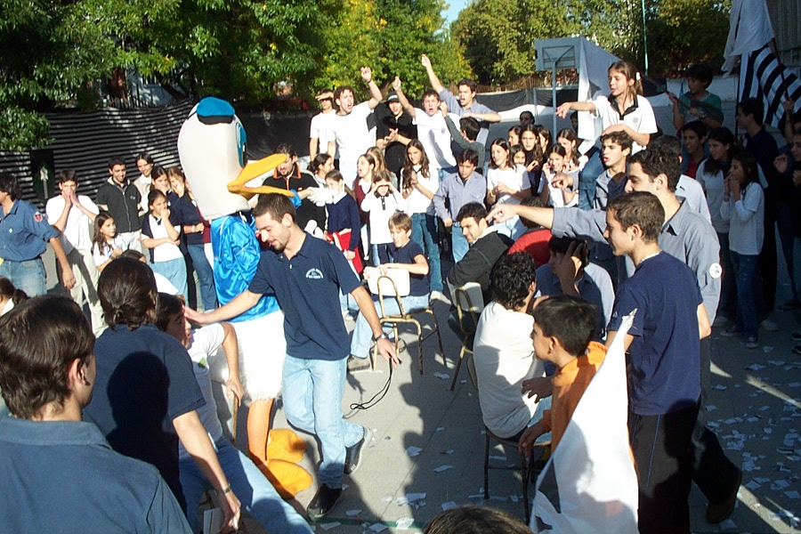

La Historia del Ruca Pampero
¿Cómo surge Fasta?
Fasta nació en la festividad de la Virgen del Rosario del año 1962, en la ciudad de Leones, provincia de Córdoba – Argentina, por iniciativa de Fr. Dr. Aníbal E. Fosbery O.P., como una institución juvenil dominicana con el objetivo de acrecentar los valores cristianos en la sociedad.
Respondiendo así a la exhortación del Concilio Vaticano II de promover la participación de los fieles laicos en la vida y misión de la Iglesia.
¿Cuándo surge el Ruca Pampero?
FASTA llegó al colegio hace poco más de 30 años. Antes era un colegio de hermanas.
Se fundó un Ruca, pero luego se disolvió y el padre Guille fundó el Ruca Pampero. Esto fue en el año 1993.
Al principio eran solo templarios. Y para que llegue a todos, empezaron a invitar a las chicas de secundaria a que vayan. Y así se formó la sección Adalides. Luego caperucitas, escuderos, y por último las herederas.
Pasaron cientos y cientos de milicianos en estos años. Muchas parejas que se conocieron en el ruca hoy son padres de familia de alumnos del colegio.
Tenemos historia en relación a las copas regionales. Nuestros milicianos lo dan todo para superarse a sí mismos y dar lo mejor en las olimpiadas deportivas, artísticas e intelectuales.
Las adalides suelen decir “Somos las noñas de la región”.
Este ruca no para de crecer. Es una gran casa de amigos para todos.
 
